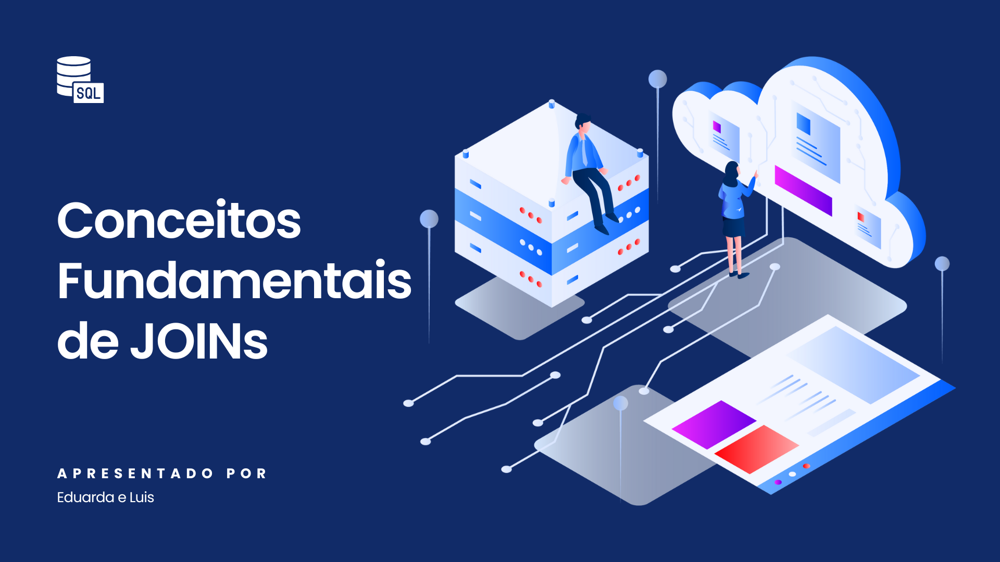

40
Vagas
Workshop JOINs
Dê um JOIN na inclusão digital! Neste workshop, você vai aprender como conectar pessoas e tecnologia de forma inteligente e empática. Assim como em um JOIN bem estruturado, vamos unir boas práticas de desenvolvimento, design consciente e experiência do usuário para criar interfaces que acolhem a diversidade. Explore técnicas que ampliam o alcance das suas aplicações, melhore a interação para diferentes perfis de usuários e torne seus projetos mais completos, funcionais e humanos. Participe e transforme seu modo de construir soluções digitais!